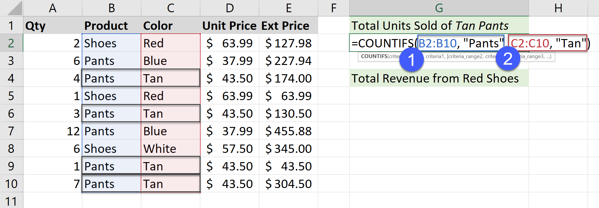

Introduction
Data aggregation is the process of combining multiple data points into a single number. It’s synonymous with summarization. In this post, we’ll review how to use aggregation functions in Excel – specifically, the conditional aggregation functions (e.g., COUNTIFS(), SUMIFS(), and AVERAGEIFS()).
Example of COUNTIFS()
The COUNT function family is the simplest. We’ll demonstrate an example here.

Notice the formula in G1, takes pairs of arguments – criteria_range and criteria. Here we count only rows that meet two conditions:
- Product = “Pants” – B2:B10 is the criteria_range1, in other words, that’s the range of cells we are going to check to see if they are equal to “Pants” (which is the criteria).
- Color = “Tan” – C2:C10 is the range of color values to check (criteria_range2) and “Tan” is the criteria.
So we only include products where the Color is “Tan” (and the Product is “Pants”) in the count.
This video shows more details.